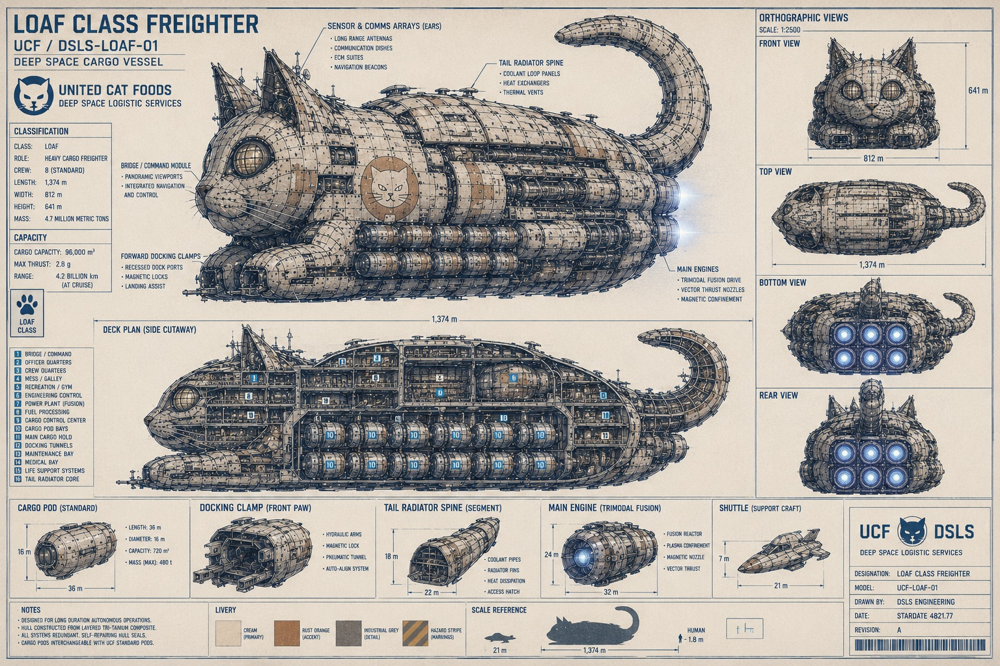

ユナイテッド・キャットフーズ / Fleet Operations
The Loaf-class heavy freighter.
Flagship class of the U.C.F. merchant fleet, model UCF-LOAF-01. Ninety-six thousand cubic meters of provisions per crossing, a trimodal fusion drive, a standard crew of eight drawn from all three species, and a silhouette that tells every station on the lane: dinner is coming, and it is calm.
Specifications
Built to carry. Shaped to rest.
The Loaf-class is the workhorse of the network: lunar aquafarm salmon outbound, Alpha Centauri botanicals inbound, certified pure water everywhere between. Hull geometry was selected after exhaustive study. In vacuum, aerodynamics are irrelevant. Stability, thermal balance, and the impression made on approaching traffic are not.
Mackerel-pattern plating manages heat distribution across the dorsal surface. The forward observation lounges glow gold and are kept warm. Approaching pilots report feeling watched. They are.
| Field | Value |
|---|---|
| Class | Loaf · heavy cargo freighter |
| Model | UCF-LOAF-01 · DSLS Engineering |
| Length | 1,374 m nose to tail base |
| Beam · Height | 812 m · 641 m |
| Mass | 4.7 million metric tons |
| Cargo capacity | 96,000 m³ in modular pods |
| Propulsion | Trimodal fusion drive · max thrust 2.8 g |
| Range | 4.2 billion km at cruise |
| Crew | 8 standard · designed for long-duration autonomous operations |
| Hull | Layered tri-tanium composite, self-repairing seals, mackerel-pattern thermal plating |
| Livery | Cream primary, rust orange accent, industrial grey detail, hazard stripe markings |
| Registry | LC series, Viroqua Prime |
Engineering
The schematic blueprint.

Deck plan, side cutaway
| # | Compartment | # | Compartment |
|---|---|---|---|
| 01 | Bridge / Command | 09 | Cargo Control Center |
| 02 | Officer Quarters | 10 | Cargo Pod Bays |
| 03 | Crew Quarters | 11 | Main Cargo Hold |
| 04 | Mess / Galley | 12 | Docking Tunnels |
| 05 | Recreation / Gym | 13 | Maintenance Bay |
| 06 | Engineering Control | 14 | Medical Bay |
| 07 | Power Plant (Fusion) | 15 | Life Support Systems |
| 08 | Fuel Processing | 16 | Tail Radiator Core |
Standard components
| Component | Specification |
|---|---|
| Cargo pod | 36 m long, 16 m diameter, 720 m³, 480 t max. Quick-release locks with power and data umbilicals. |
| Docking clamp | Front paw assembly: hydraulic arms, magnetic lock, pressurized tunnel, auto-align system. |
| Tail radiator segment | 18 m diameter, 22 m length. Coolant pipes, radiator fins, heat dissipation, access hatch. |
| Main engine | Trimodal fusion, 24 m by 32 m per nozzle. Fusion reactor, plasma confinement, magnetic nozzle, vector thrust. |
| Shuttle | Kitten-class support craft, 7 m by 21 m. Rides in the ventral maintenance bay and follows the ship everywhere. |
Design Philosophy
Every feature is load-bearing.
| Feature | System | Function |
|---|---|---|
| The ears | Sensor & comms arrays | Long-range antennas, communication dishes, ECM suites, and navigation beacons. They swivel toward anything interesting, which is how the crew knows something is interesting. |
| The eyes | Observation lounges | Gold-lit forward lounges with the best view on the ship. Reserved for the watch officer and whoever the watch officer permits. |
| The whiskers | Proximity booms | Fine lateral sensor filaments for close-quarters docking. The ship does not touch anything it does not intend to touch. |
| The tail | Radiator spine | Coolant loop panels, heat exchangers, and thermal vents. Held high on approach, curled at rest, repositioned during deliberation. |
| The paws | Docking clamps | Forward paw assemblies house recessed dock ports, magnetic locks, and landing assist, folded neatly beneath the hull at cruise. |
| The loaf | Cargo volume | The most stable resting geometry known to feline engineering. Maximum volume, minimum fuss, no exposed extremities. |
The Ship
The loaf, whole.

Life Aboard
The bridge is warm and quiet.
Every system aboard is redundant and the hull seals repair themselves, so the ship largely runs the crossing on its own. The standard crew of eight is aboard for judgment, ceremony, and warmth. Watch rotation follows the Feline-Derived Circadian Prescription. The command module has panoramic viewports and a heated circular dais; the captain rests at the center of everything, eyes mostly closed, missing nothing.
The galley serves the full Galactic Gourmet line. Crew quarters face inboard, toward the reactor warmth. Nobody aboard a Loaf-class has ever complained about the temperature, and this record is defended.
Cargo Operations
Pod bays, and one great hold.
Provisions ride in standard 720-cubic-meter pods racked along both flanks, with bulk freight in the main cargo hold amidships. Every bay is climate controlled and inventoried continuously by the thinking machines. Feline inspection is conducted from the highest available surface, per doctrine: Galactic Gourmet, Cosmic Crunchies, Time-Release Crunchies, botanicals, and certified pure water in dedicated tanks.
Loading follows a strict manifest. Unloading follows the manifest and the local station cats, who are always at the dock early, and who are never wrong about which pallet opened in transit.
Fleet Registry
Ships of the line.
| Registry | Vessel | Assignment |
|---|---|---|
| LC-01 | UCFS Mackerel | Fleet flagship. The Amber Shallows run and ceremonial arrivals. |
| LC-02 | UCFS Marmalade | The Mars circuit, serving partner feline communities. |
| LC-03 | UCFS Calico | Alpha Centauri botanical route, long haul, temperature critical. |
| LC-04 | UCFS Patience | Deep-lane survey and slow freight. Never early. Never late by much. |
| LC-05 | UCFS Warm Biscuit | Lunar aquafarm shuttle, Mare Tranquillitatis to the L5 gardens. |
Transmission from the Flagship
People ask if the ship is shaped like me. They have it backwards. Rest is the correct configuration for anything that must be ready, and the engineers simply agreed. I am not shaped like the ship. The ship and I have both arrived at the answer. Captain, UCFS Mackerel · logged mid-crossing
Charter Freight
Put your cargo in the loaf.
Charter capacity is available on most crossings for station operators, research outposts, and partner retailers. Water tanks book early. So does the window bay.